- The cost for any transfer between a truck and ship or buffer is 2 minutes.
- The cost for any transfer between the buffer and ship is 4 minutes(between the 2 pink cells).
- The cost for any transfer in ship or buffer is 1 minute / cell.
Ship Management System
The software's purpose is to identify the most efficient solution (minimizing
time consumption) for loading/unloading operations and optimizing the balance of a ship at Keoghs
Port. Keoghs Port is a company that generates revenue through
ship loading, unloading, and balancing.
When a ship arrives at the port, the operator—Keoghs Port staff stationed in a tower that moves
along with the crane—receives a manifest from the captain. This manifest is a text
file containing information about the containers, including their coordinates, weight, and
descriptions (e.g., Walmart Ohio Cat toys).
A manifest sample
The cost comes from the movement of crane. Regardless of whether the crane grabs a container or not, there will be a cost as long as the crane is moved.

If the current task is to loading/unloading a ship. At this moment, the operator already has a list of containers that need to be unloaded and containers on trucks waiting to be loaded.

If the current task is to balancing a ship, then there is no need to consider loading/unloading process. All the work is to move the containers on the ship so that the weight difference between the left half of the ship and the right half of the ship is within 10%.
Before the introduction of this software, operators relied on pen and paper to calculate what they believed to be the best solution based on their past experience. This manual process was time-consuming and couldn't guarantee the attainment of the optimal solution.
The software deals with X2 class ships, that means ships only have one bay. This one
bay has a possible  Let's start with a 2x4 bay class ship, try to find the balancing process. Since the
crane can only grab one container each time, it is always going to be pick up, drop off, pick up, drop
off...
Let's start with a 2x4 bay class ship, try to find the balancing process. Since the
crane can only grab one container each time, it is always going to be pick up, drop off, pick up, drop
off...


8 rows and 12 columns, but some ships could have less.
Let's start with a 2x4 bay class ship, try to find the balancing process. Since the
crane can only grab one container each time, it is always going to be pick up, drop off, pick up, drop
off...
- In the odd layers, we pick a column to put the crane over, and pick up .
- In the even layers, we pick a column to put the crane over, and drop off .
The following slides show the Spanning Tree of the algorithm:
The loading/unloading algorithm is similar to the balancing algorithm. In the loading process, the software verifies whether the container picked up by the crane is one of containers for unloading. If it is, the software incorporates it into the unloading sequence and subsequently introduces a loading container to this sequence. This approach effectively prevents the crane from remaining idle. Additionally, the loading container relies on the software to determine the optimal coordinate with the least cost for placement.
The software is 100% written through Python's GUI tkinter.
When we run the software, we first see the company's logo in the upper left corner, and there is a check in in the upper right corner to record which operator is operating the crane.
This operator can click "check in", and a window will pop up for the operator to enter his name, then his name will show on the software.
Next, the software asks the operator to upload a manifest file.
On the next page of the software, displaying file names enables the operator to ensure that he is dealing with the correct file. And the operator Andy needs to choose loading/unloading or balancing the ship to continue.
Let's assume Andy clicks loading/unloading:
Now, Andy can choose which containers on the ship he needs to unload, and he can also add loading containers he needs to loading on the ship.
After Andy pick the containers, the software will show up a summary to let him double check the containers he just choose to unload and load.
Then, the software will show how many step is going to need for this process, and how long it will take. There is also a loading and unloading sequence so that Andy can inform waiting truck drivers about the order of entry into the port.
Andy hits Start button, then there will be a bunch of steps show to Andy what he needs to do.

When all steps are completed, the software will generate a reminder to remind the operator to send the updated manifest file to the captain.
It should be noted that the step-by-step display was requested by the customer Keoghs Port to avoid operator error. The final update of the container coordinates in the manifest file is also done by the software in the background, and the reminder sent to the ship's captain is also requested by the customer Keoghs Port.
Restaurant Online Ordering Website
The main language used to make this website is JavaScript. The 2.6% of CSS I used
the inline library Tailwind,
and the 2.2% of HTML is responsible for the icon of the website tab and the website's whole
background color and text color.
- JavaScript
- React Router
- Redux
- CSS
- Tailwind
- HTML
- Website Icon
- Background Color and Text Color
- API
- Free Online API
By using this library, the app can immediately render some new UI and make data requests with 'fetch' to update the page with new information. A easy way to share data from different website pages.
Using the Redux library makes it easy to capture an entire event, such as a customer's order, and notify all different pages about this event. It enables the reflection of this event across various pages seamlessly.
Tailwind CSS offers a streamlined development experience with its utility-first approach, allowing you to write inline CSS directly in your HTML without the need to switch between separate style sheets and HTML files frequently. The code written in Tailwind is highly readable compared to Bootstrap, and its integration with VS Code enhances the developer experience.
With features like hover previews, you can easily understand and modify the
underlying traditional CSS by simply hovering over a code snippet,
providing a clear understanding of how to achieve the desired styling changes.
In my project, HTML plays a relatively minor role, primarily contributing to two key functionalities. Firstly, it facilitates the display of a hamburger icon on the website's tab, offering a visually intuitive element for navigation.
Secondly, HTML is instrumental in setting the background color and text color of the website, providing a foundational structure for the overall visual presentation.
Can go to this website to check the details: Click Here
- Home Page
- Ordering Page 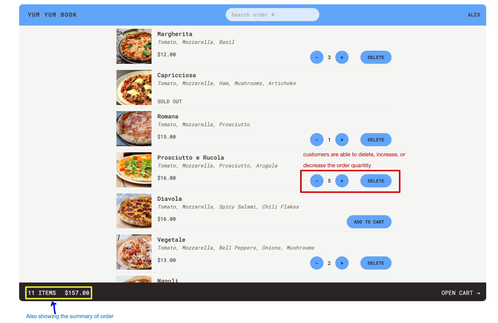
- Cart Page 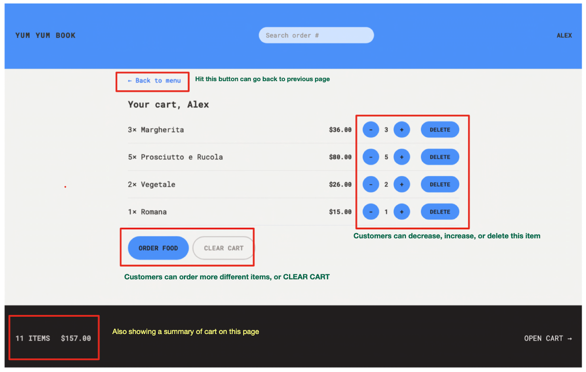
- On Cart Page, Customers can go back to the previous page by hitting Back to menu button.
- Customers can
'-','+', or'delete'items - Customers can
ordermore food, orCLEAR CART. - Customers can check how many items they have ordered, and the total price.
- Input Phone Number and Address Page 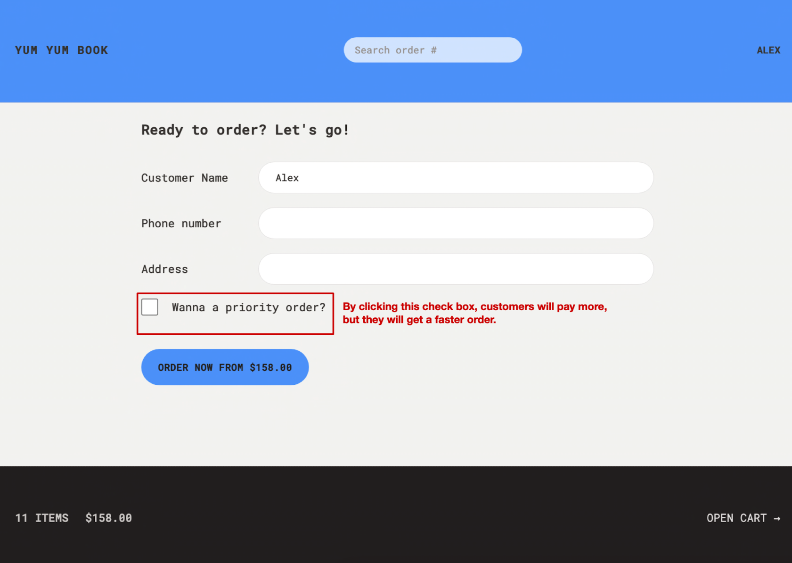
- Customers will be asked to enter their
phone numberandaddresson this page. - By clicking
"Wanna a priority order?"check box, customers will pay more and get a faster order. - Preparing Order Page 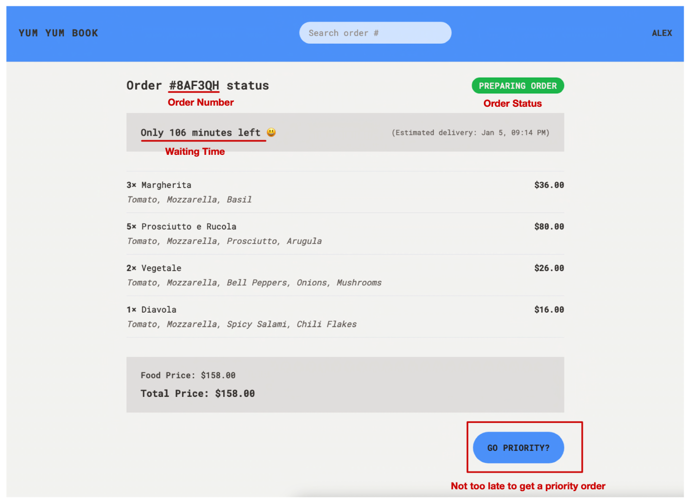
- Customers can track their order by using the
Order Numbershows on this page. Order Statusis showing on the right corner of this page.The Waiting Timeshows on this page.- If customers feel that the order waiting time is too long, they can still get a priority order
by clicking the
GO PRIORITYbutton.
Customers can track orders by entering their existing order number in the upper right corner of the homepage, or they can start placing an order by entering their name
On this page, customers can select the pizzas they want by clicking the ADD TO CART button. Once they click ADD TO CART, they can increase or decrease the order quantity of that pizza.
Solving N-Puzzle Problems
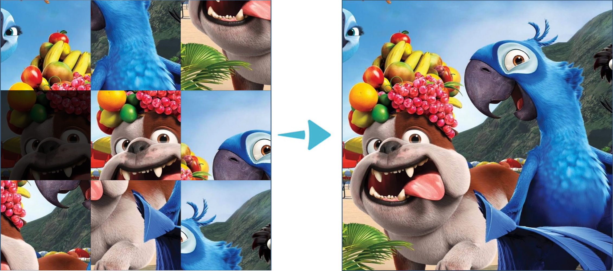Although this project and the next machine learning project are not as complex as the previous two, they played a crucial role in my understanding of the primary algorithms of artificial intelligence.
In this project, the programming language I used is 100% Java.
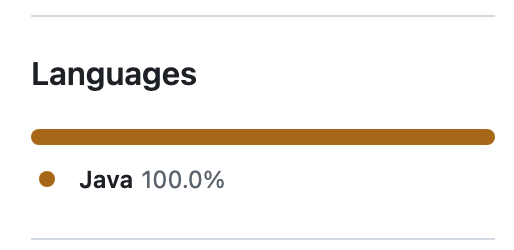The Uniform Cost Search is a blind search in N-puzzle problems.
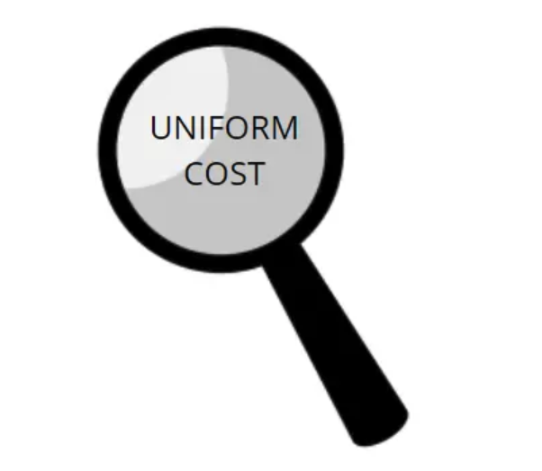The 3-puzzle is small enough that we can show a full search tree.
Repeated states are shown in gray.
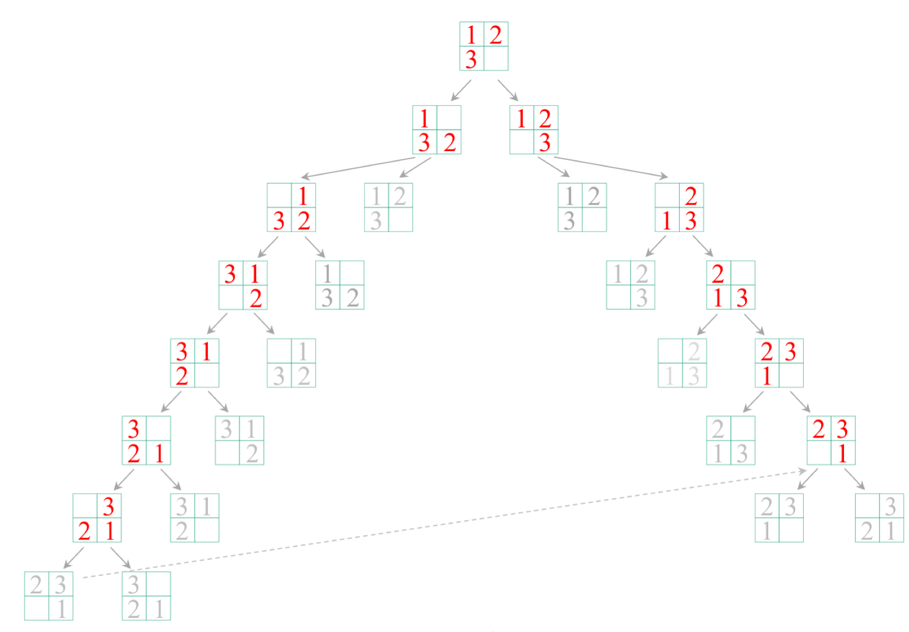After level-6, there is no unvisited nodes in this tree.
However, for 3-puzzle problems, there is no problem using uniform cost search, but for 8-puzzle and higher level searches, a very large spanning tree will be formed and extremely high time complexity will be formed.
Note that in the search tree, we can acturally trim a branch to get the goal state.
This leads to the introduction of Heuristic Search.
Heuristic Search is a Informed Search.
A Heuristic is a function that, when applied to a state, returns a number that is an estimate of the merit of the state, with respect to the goal.
In other words, the heuristic tells us approximately how far the state is from the
goal state.
In this case, only '8' is misplaced, so the heuristic function evaluates to 1.
In other words, the heuristic is telling us, that it thinks a solution might be available in just 1 more move.
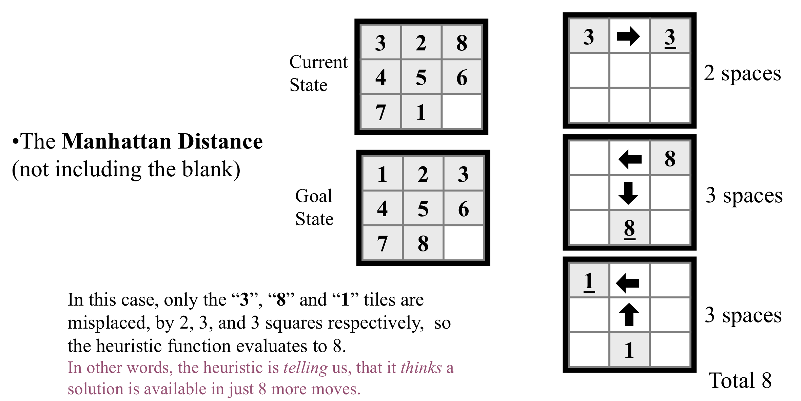Through Heuristic Search, we can effectively prune the Blind Search Tree.
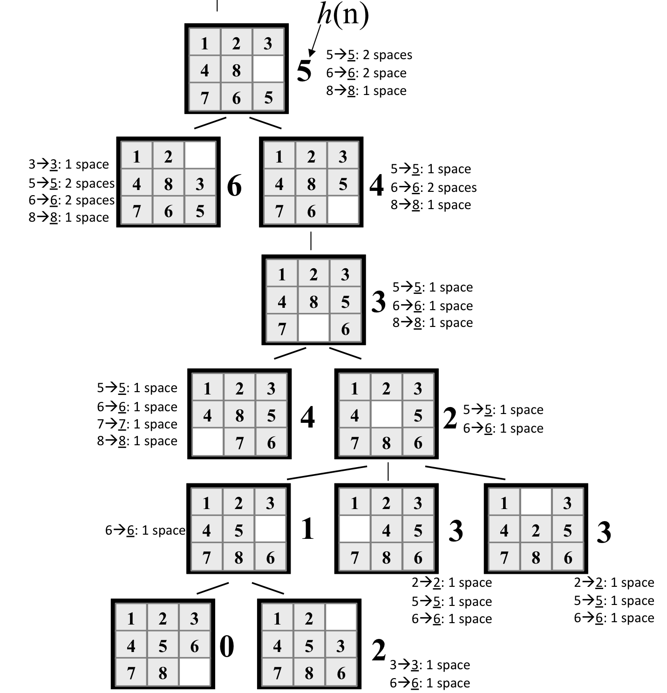- My Code of Finding h(n) 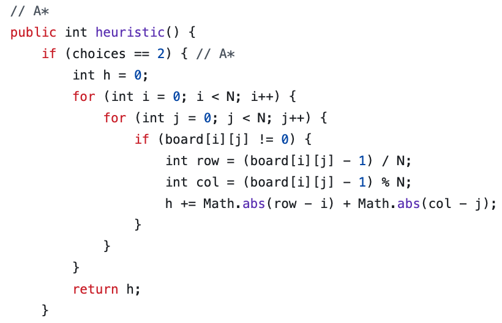
- A Sample Console Output 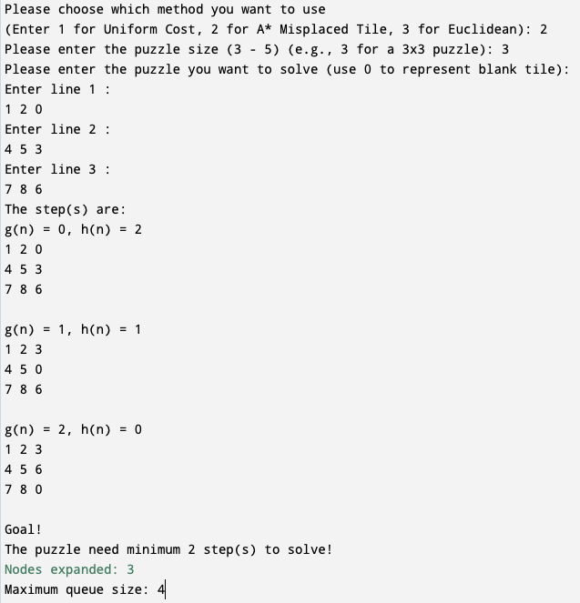
Machine Learning Projects
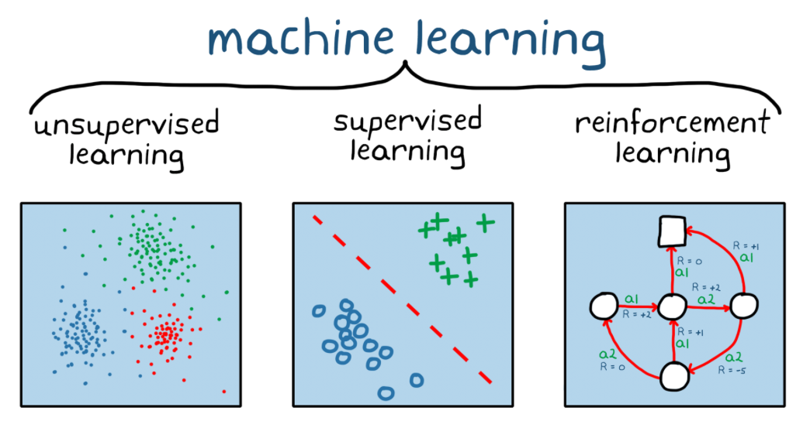This is my favorite of all my projects. I think it's really cool. It gives me
a
Basic Idea that instead of trying to create a very complex program to do X, use a relatively
simple program that can learn to do X.
For example, instead of trying to program a car to drive
(if light(red) && Not pedestrain || speed(x) <= 12 && ...),
create a program that watches human drive, and learns how to drive.
In this project, the programming language I used is 100% Java.
This project has three parts:
- Random Accuracy Feature Selection
- Nearest Neighbor Classifier
- The Combination of the previous two parts
The details are as follows:
- Finding Selection Features
- Combining Selection Features
If we want to write a machine learning code to let the computer distinguish Canadian quarters from American quarters.
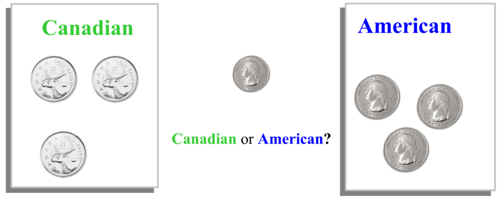Our first reaction is probably to compare their size differences.
So we first measured their diameters.
In the best case, we would find a single feature that would strongly separate te
coins.
After we measure some data, we plan to put the data in a chart for comparison.
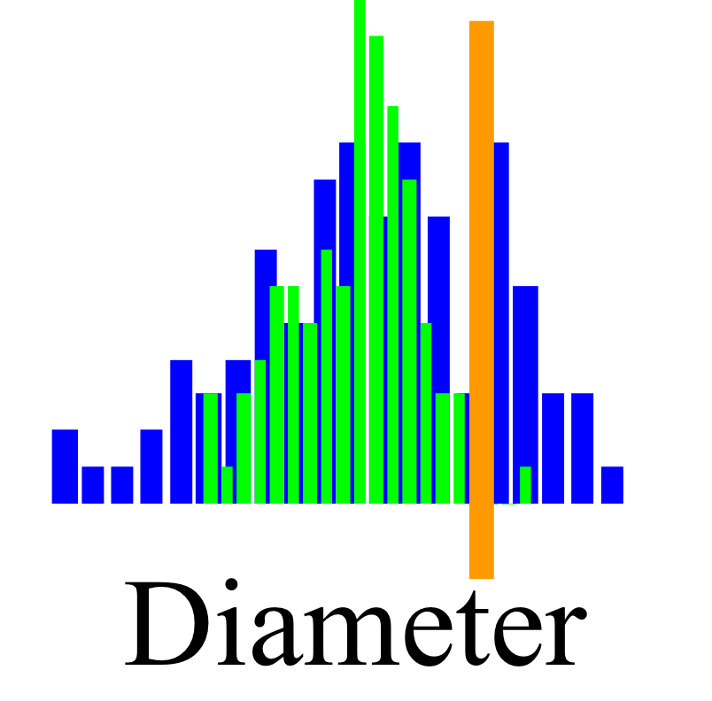Here we have 99% blue on the right side, but the
left side is about
50/50 green/blue.
The tree below is a Feature Selection Tree,
which means that the algorithm goes from not selecting a feature to selecting feature 1
(diameter).
In the same way, we measured their thickness.
Here I have all green
on the left side, but the right side is about 50/50
green/blue.
Then, we measured weight.
The weight feature seems very promising.
It is not perfect, but the left side is about 92%
blue, and the right side is about 92%
green.
Finally, we decided to add a new feature: Electrical Resistance.
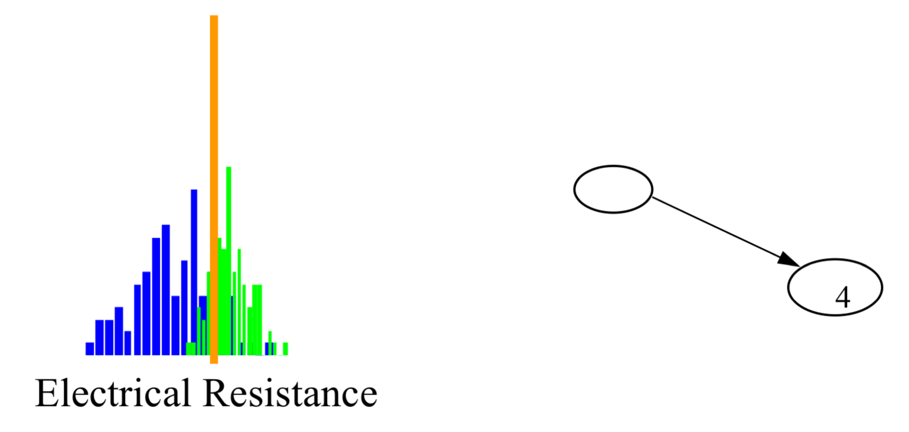The Electrical Resistance seems also promising.
Again, it is not perfect, but the left side is about 89% blue,
and the right side is about 89% green.
Heuristic Search is a Informed Search.
A Heuristic is a function that, when applied to a state, returns a number that is an estimate of the merit of the state, with respect to the goal.
In other words, the heuristic tells us approximately how far the state is from the
goal state.
In this case, only '8' is misplaced, so the heuristic function evaluates to 1.
In other words, the heuristic is telling us, that it thinks a solution might be available in just 1 more move.
Through Heuristic Search, we can effectively prune the Blind Search Tree.
- My Code of Finding h(n)
- A Sample Console Output
Heuristic Search is a Informed Search.
A Heuristic is a function that, when applied to a state, returns a number that is an estimate of the merit of the state, with respect to the goal.
In other words, the heuristic tells us approximately how far the state is from the
goal state.
In this case, only '8' is misplaced, so the heuristic function evaluates to 1.
In other words, the heuristic is telling us, that it thinks a solution might be available in just 1 more move.
Through Heuristic Search, we can effectively prune the Blind Search Tree.
- My Code of Finding h(n)
- A Sample Console Output